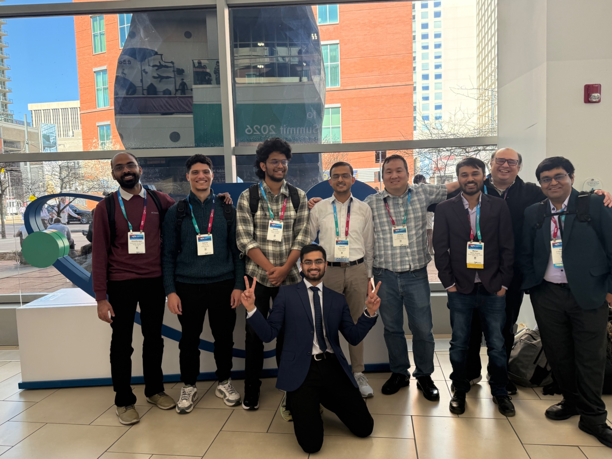

Quantum Spin Lab · Undergraduate researcher
Worked with Prof. Arnab Banerjee’s group on triangular lattice quantum materials. I grew and characterized single crystals, studied low temperature magnetic behavior with MPMS and PPMS measurements, and analyzed experimental data in Python. Our TlYbS₂ work is now available as a preprint, on which I am a co-author.

Summer Undergraduate Research Fellow
Revisited the growth conditions for TlYbS₂ and helped obtain single crystals after earlier attempts had struggled. This experience showed me how much progress can come from carefully rechecking the literature and changing one part of a process at a time.
Physics Data Mine · High energy physics
Used Python and Monte Carlo methods to study simulated top quark decay data and build selection routines for particle signatures. The work strengthened my data analysis and scientific programming skills.